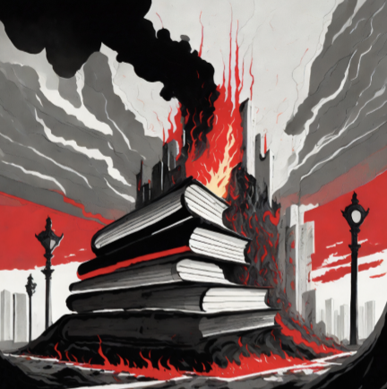

Censored
linkBanning Books Threatens Democracy.
The history of banned books in the United States is a nuanced and often tumultuous tale, intricately woven with the threads of freedom of expression and societal apprehensions about morality, ideology, and perceived threats. Across different eras in American history, a myriad of books has found itself in the crosshairs of censorship, facing bans fueled by motivations as diverse as religious objections, moral qualms, and contentious political and social debates.
As societal values have shifted over time, so too has the definition of what is considered offensive or objectionable, adding layers of complexity to the ongoing struggle between the principles of censorship and the fundamental right to freedom of expression. This intricate dance has manifested in bans on literature that challenged prevailing norms, from the religious and political controversies of the colonial period to the moral quandaries of the 19th century.
In the digital age, challenges to books persist, often revolving around demands for removal from school curricula or library shelves. Titles exploring LGBTQ+ themes, discussions of racism, and controversial political viewpoints frequently find themselves at the center of these disputes.
Banned Books Week, inaugurated in 1982, stands as an annual testament to the enduring importance of safeguarding the freedom to read. This event not only serves as a rallying point for those advocating intellectual freedom but also underscores the need to champion diverse voices and perspectives. The tension between censorship and freedom of expression thus remains a dynamic and integral facet of the cultural and literary landscape in the United States, reminding us that the struggle for a truly open and inclusive literary environment is an ongoing journey.